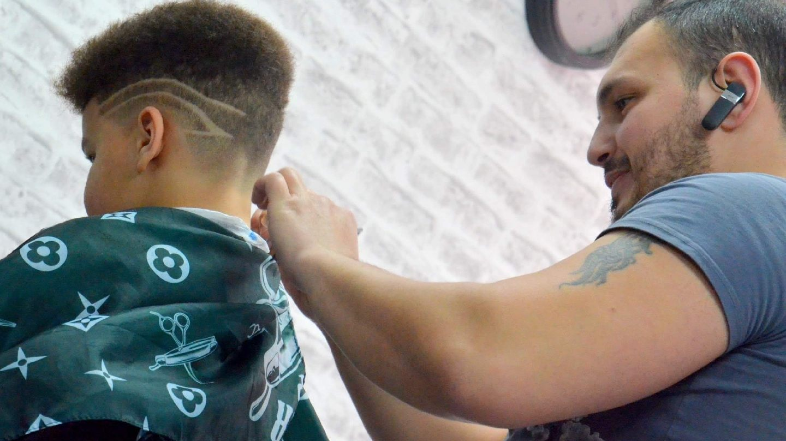
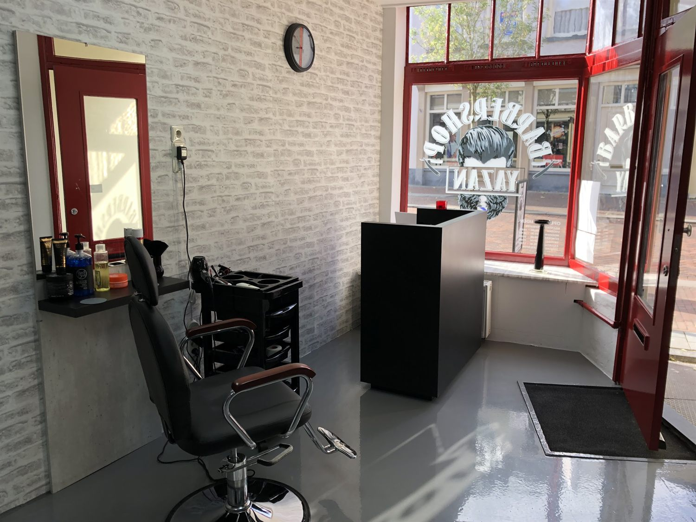
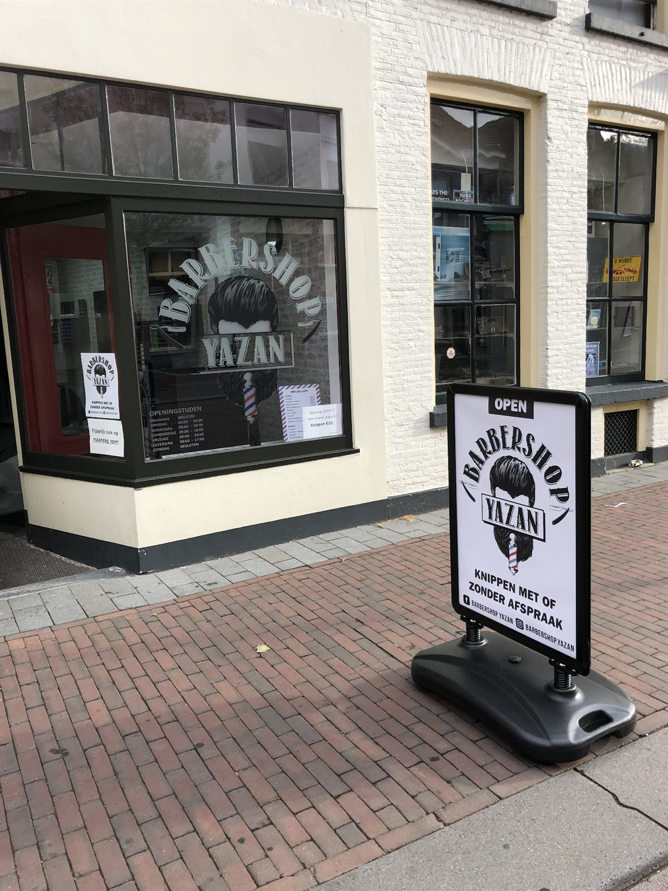
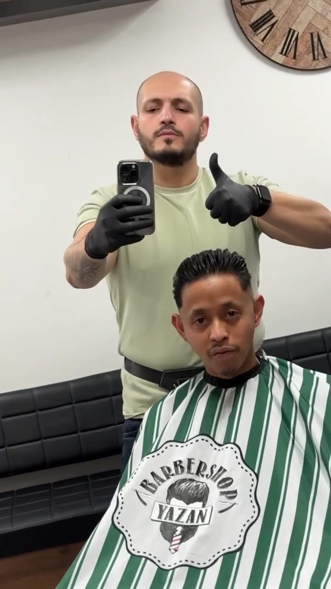

Laarstraat 9 · Zutphen
Yazan en Jano knippen zes dagen per week, doordeweeks door tot in de avond. Loop binnen, of leg vooraf een tijd vast en sta niet te wachten.
De zaak
Een vaste stoel in het centrum van Zutphen. Witte baksteen, rode kozijnen en een klok aan de muur die iedereen hier kent.


Op tijd is op tijd.Bertus Bosvelt · geholpen door Jano
Uw tijd
Hieronder staat de echte agenda van de zaak. Kies Yazan of Jano, kies een behandeling en leg uw tijd vast.
Zes dagen per week open, doordeweeks tot in de avond
Liever even overleggen? Bel de zaak Stuur een appje
Zonder afspraak mag ook.
Zo staat het op het bord voor de deur en zo blijft het. Een tijd vastleggen scheelt u alleen het wachten, zeker op donderdag en vrijdag als het druk is.
Behandelingen
Elke regel hieronder is meteen een knop. Tik op wat u wilt en u staat in de agenda.
Achter de stoel
Heeft u een vaste kapper? Kies die gewoon in de agenda, dan zit u bij wie u gewend bent.

Praktisch
| maandag | gesloten |
|---|---|
| dinsdag | 09.30 tot 19.00 |
| woensdag | 09.30 tot 18.15 |
| donderdag | 09.30 tot 19.30 |
| vrijdag | 09.30 tot 19.00 |
| zaterdag | 09.30 tot 17.00 |
| zondag | gesloten |